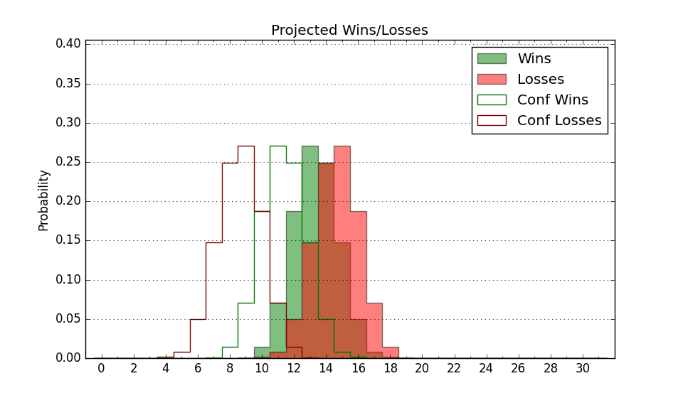

| Home | Game Probabilities | Conferences | Preseason Predictions | Odds Charts | NCAA Tournament |
| City: | Jacksonville, Alabama | |
| Conference: | Conference USA (3rd)
| |
| Record: | 7-4 (Conf) 9-10 (Overall) | |
| Ratings: | Comp.: -4.4 (214th) Net: -4.3 (214th) Off: 104.7 (242nd) Def: 109.0 (168th) SoR: 0.0 (107th) |
| Remaining | ||||||
|---|---|---|---|---|---|---|
| Date | Opponent | Win Prob | Pred. | |||
| 2/7 | Kennesaw St. (151) | 50.5% | W 75-74 | |||
| 2/11 | UTEP (271) | 76.8% | W 69-61 | |||
| 2/14 | New Mexico St. (180) | 57.1% | W 70-68 | |||
| 2/18 | @ Louisiana Tech (261) | 46.8% | L 62-63 | |||
| 2/21 | @ Sam Houston St. (106) | 14.8% | L 67-79 | |||
| 2/26 | Delaware (294) | 80.8% | W 69-60 | |||
| 2/28 | Liberty (90) | 31.7% | L 66-71 | |||
| 3/5 | @ New Mexico St. (180) | 28.1% | L 66-72 | |||
| 3/7 | @ UTEP (271) | 49.3% | L 64-65 | |||
| Previous | Game Score | |||||
| Date | Opponent | Win Prob | Result | Off | Def | Net |
| 11/14 | Coastal Carolina (229) | 69.8% | W 74-67 | 4.8 | -2.8 | 2.0 |
| 11/19 | South Alabama (201) | 62.1% | L 65-71 | -10.1 | -7.5 | -17.6 |
| 11/24 | @Arkansas St. (176) | 27.5% | L 63-74 | -13.5 | 10.7 | -2.9 |
| 11/26 | (N) North Dakota St. (137) | 32.3% | L 43-56 | -34.9 | 16.4 | -18.5 |
| 12/1 | North Alabama (331) | 87.8% | L 66-73 | -15.3 | -13.6 | -28.9 |
| 12/13 | @Georgia St. (267) | 48.6% | L 73-77 | 8.4 | -17.1 | -8.7 |
| 12/17 | Eastern Kentucky (258) | 74.5% | L 59-62 | -19.6 | 9.2 | -10.4 |
| 12/20 | @East Tennessee St. (117) | 16.5% | W 81-75 | 32.4 | -10.6 | 21.8 |
| 12/29 | Western Kentucky (181) | 57.2% | W 78-67 | 11.0 | 4.0 | 15.0 |
| 1/2 | @Delaware (294) | 55.3% | W 67-64 | 6.7 | -3.4 | 3.2 |
| 1/4 | @Liberty (90) | 12.0% | L 69-78 | 9.4 | -1.7 | 7.7 |
| 1/7 | FIU (185) | 58.4% | W 71-64 | 3.4 | 5.0 | 8.4 |
| 1/10 | @Kennesaw St. (151) | 23.0% | L 82-88 | 12.5 | -10.2 | 2.3 |
| 1/14 | Sam Houston St. (106) | 37.2% | L 62-77 | -4.1 | -13.6 | -17.7 |
| 1/17 | Louisiana Tech (261) | 75.0% | W 64-60 | 1.2 | -9.4 | -8.3 |
| 1/23 | Middle Tennessee (155) | 53.0% | W 75-58 | 16.6 | 6.4 | 23.0 |
| 1/28 | @FIU (185) | 29.2% | W 78-74 | -1.8 | 17.8 | 16.0 |
| 1/31 | @Missouri St. (206) | 33.5% | L 67-74 | -4.8 | 0.4 | -4.4 |
| 2/5 | @Western Kentucky (181) | 28.2% | W 71-66 | 2.5 | 14.9 | 17.4 |
| Stats & Trends | |||||
|---|---|---|---|---|---|
| Current | Day | Week | Month | Season | |
| Composite | -4.4 | -0.0 | +0.4 | +3.0 | +2.1 |
| Comp Rank | 214 | -- | -- | +24 | -14 |
| Net Efficiency | -4.3 | -0.0 | +0.3 | +3.4 | -- |
| Net Rank | 214 | -1 | -- | +27 | -- |
| Off Efficiency | 104.7 | +0.0 | -0.4 | +1.6 | -- |
| Off Rank | 242 | -- | -10 | +12 | -- |
| Def Efficiency | 109.0 | -0.0 | +0.7 | +1.8 | -- |
| Def Rank | 168 | +2 | +25 | +63 | -- |
| SoS Rank | 230 | +1 | +15 | +68 | -- |
| Exp. Wins | 13.4 | -0.0 | +0.5 | +2.9 | +1.0 |
| Exp. Conf Wins | 11.4 | -0.0 | +0.5 | +2.9 | +3.0 |
| Conf Champ Prob | 0.1 | +0.0 | -0.0 | -0.3 | -2.6 |

| Advanced Stats | ||
|---|---|---|
| Stat | Value | Rank |
| Off Eff FG % | 0.491 | 253 |
| Off Ast Ratio | 0.124 | 308 |
| Off ORB% | 0.299 | 193 |
| Off TO Rate | 0.160 | 266 |
| Off FT Ratio | 0.456 | 12 |
| Def Eff FG % | 0.501 | 132 |
| Def Ast Ratio | 0.140 | 126 |
| Def ORB% | 0.303 | 179 |
| Def TO Rate | 0.146 | 194 |
| Def FT Ratio | 0.381 | 244 |